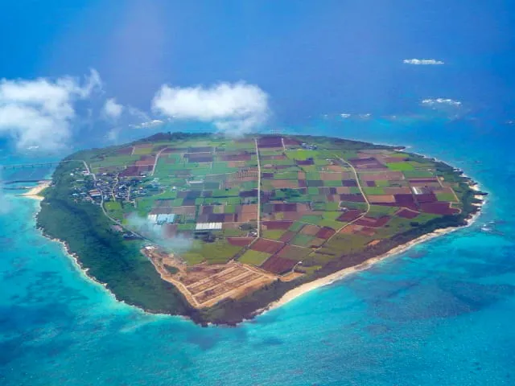
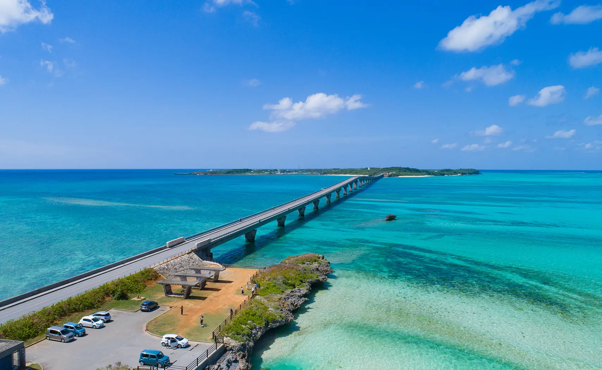
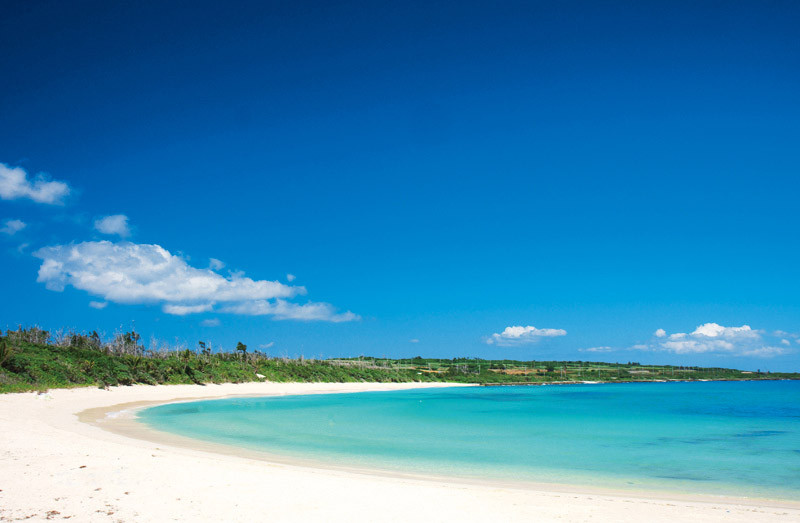
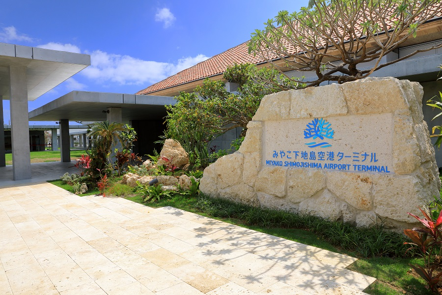
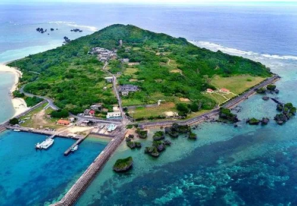

宮古島の島々
宮古島、と一概に言ってもたくさんの島があります。
島ごとに名物や文化が存在しており、どこも魅力的な場所です！
合間に豆知識も入れるのでそちらもお楽しみください！
目次
来間島（くりまじま）

宮古島の南西部に位置する周囲9㎞ほどの小さな島です。
宮古本島と来間島を結ぶ橋、来間大橋は全長1690ｍあり、橋から見える与那覇前浜の美しい砂浜は最高のドライブスポットとなっています。
島にある竜宮展望台の近くには「楽園の果実」というカフェがあり、有機栽培にこだわったオリジナルメニューを食べられます！
池間島

今もなお手つかずの自然が残る池間島は、車なら10分ほどでぐるっと1周できてしまう小さな島。
ここは島全体が国の「鳥獣保護区」に指定されており、島の中央には湿原、東にはサンゴ礁が広がる自然豊かな島です。
また池間島は今も島の神々を敬う御嶽信仰の風習が根強く残っており、民俗学的にも注目されています。
伊良部島

伊良部島には、宮古本島と結ばれている無料で渡れる橋としては日本一の長さを誇る橋である伊良部大橋、
南側にあるゆるやかな弓状の形をした、キメの細かい真っ白な砂浜が印象的な美しいビーチである渡口の浜、
「日本の渚・100選」に認定された遠浅の浜である佐和田の浜があり、小さい島ではありますが名所が数多く点在しています！
下地島

下地島は伊良部島と繋がっている小さな離島で、「ケーブダイビング」のメッカとしても知られています。
島の西部の佐和田礁湖では、海中に石垣を積み、潮の満ち引きを利用して魚を捕る伝統的な漁法「魚垣（ながき）」の名残りを見ることができます。
また下地島空港には「そらとぶピカチュウプロジェクト」とコラボしたフォトスポットが多数設置されているポケモンの聖地ともなっています！
大神島

宮古島から北に船で約15分の場所に位置する大神島。宮古島や池間島からも望むことができる、「宮古ブルー」の海に浮かぶ島です。
宮古諸島では、大神島を「ウガンジマ」「神の島」などと呼び、古くから信仰の対象としてきました。
島内のルールとして石や木の枝なども含む島のものは持ち出してはならず、島の人々が古くから大切にしてきた聖域が点在しており、立ち入り禁止区域も多くあります。
伝説①「神の岩」の祟り
かつて島の道路工事で邪魔になる聖なる岩を砕いたところ、作業員に体調不良が続出。
慌てて岩を元に戻すと、途端に体調は回復したと言われています。
伝説② キャプテン・キッドの財宝
1960年代、海賊キャプテン・キッドの財宝が隠されていると噂が広まり、多くの人が聖域にまで踏み込みました。
しかし、財宝は見つからず、原因不明の病に倒れる人がいたと伝えられています。
伝説③ 2人から始まった歴史約300年前、海賊の襲撃で島民は壊滅。
生き残った男女2人から、現在の島民の歴史が再び始まったという伝説が残っています。
まとめ
小さな島ながらも魅力が多くあることを知っていただけましたでしょうか？
またいくつかの島は古くから守られてきた厳しいルールもあるため、訪れる際はガイドさんや島民の方々と周ることをお勧めします。
観光をするときはルールを守って、楽しい島巡りをしてくださいね！
問い合わせ
ご覧いただきありがとうございます！
宮古島のことで質問などがありましたらお気軽にお問い合わせください！